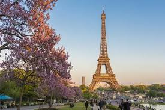
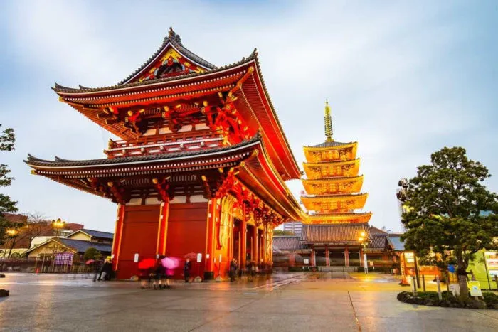
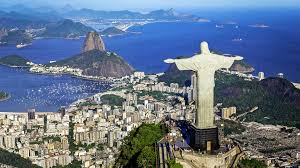
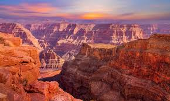
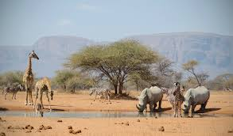
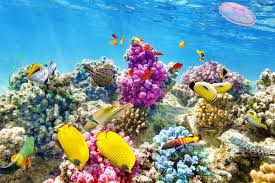

Relatos de Viagem
🗼 Europa: Descobrindo Paris

Paris é uma cidade icônica, cheia de história, arte e gastronomia. Passear pelas margens do rio Sena, visitar o majestoso Palácio de Versailles e experimentar deliciosos croissants em uma autêntica padaria parisiense fazem parte da experiência inesquecível. Além disso, cada bairro tem seu charme único, como Montmartre, lar dos artistas e do famoso Moulin Rouge.
🏯 Ásia: Explorando Tóquio

Tóquio é uma metrópole dinâmica onde tradição e inovação coexistem. Desde os templos serenos de Asakusa até os letreiros vibrantes de Shibuya, a cidade oferece uma variedade incrível de experiências. A culinária japonesa também encanta, seja nos mercados de sushi de Tsukiji ou nas barraquinhas de ramen escondidas pelas ruas movimentadas.
🏞 América do Sul: Aventuras no Rio de Janeiro

O Rio de Janeiro é conhecido por suas paisagens deslumbrantes e atmosfera vibrante. O Cristo Redentor e o Pão de Açúcar são pontos turísticos imperdíveis, mas explorar os bairros históricos e as praias como Copacabana e Ipanema também enriquecem a viagem. Sem falar no Carnaval, uma das maiores festas culturais do mundo!
🏔 América do Norte: Descobrindo o Grand Canyon

O Grand Canyon, nos Estados Unidos, impressiona com suas formações geológicas imensas e vistas panorâmicas espetaculares. Trilhas como a South Rim oferecem caminhadas inesquecíveis, enquanto um passeio de helicóptero proporciona uma visão privilegiada da imensidão do desfiladeiro.
🐘 África: Safari na África do Sul

Realizar um safari na África do Sul é uma experiência única, onde é possível ver leões, elefantes e girafas em seu habitat natural. O Parque Nacional Kruger é um dos destinos mais famosos para safaris, proporcionando encontros incríveis com a vida selvagem e cenários deslumbrantes.
🏝 Oceania: Maravilhas da Grande Barreira de Coral

A Grande Barreira de Coral, na Austrália, é um paraíso para mergulhadores. Seus recifes coloridos abrigam uma biodiversidade impressionante, com peixes exóticos, tartarugas marinhas e até pequenos tubarões. A beleza dos corais transforma qualquer mergulho em uma experiência inesquecível.